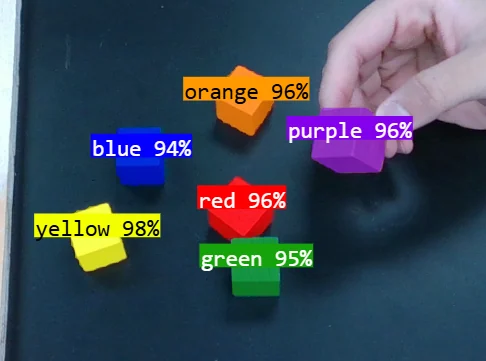
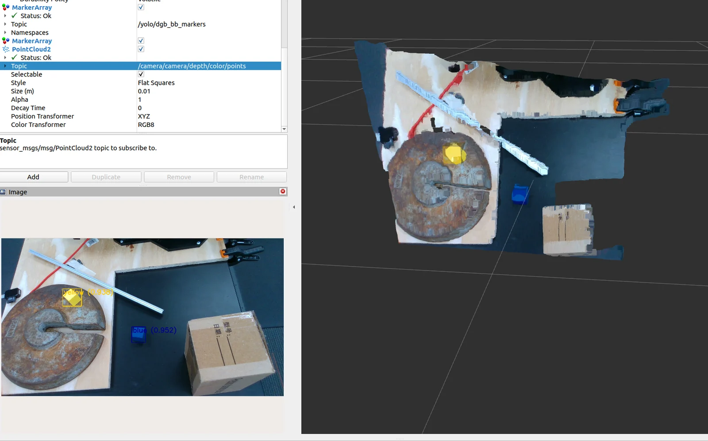

01 / Collaborative robotics research
Published · AIAA 2025Visual sensor based robotic pick-and-place
Bringing object detection, depth perception, and a robot arm into one manipulation workflow.
- Context
- Collaborative robotics research
- My contribution
- ROS migration, model development, first-listed paper author
- Toolkit
- ROS 2 Humble · Python · YOLOv11 · RealSense D435i · AprilTag

The challenge
Finding an object is only the beginning.
A robot needs a useful target in its own coordinate system. This research explored how visual object detection, depth sensing, and calibration can work together to guide a pick-and-place operation in a controlled workbench environment.
The system combines an Interbotix ViperX-300 arm and Intel RealSense D435i with a perception and control workflow in ROS 2 Humble.
System approach
From an image to a reachable point.
- 01
Recognize the object
A YOLOv11 model identifies colored objects in camera images.
- 02
Locate it in space
Depth sensing supplies spatial information, while AprilTag based calibration relates the camera view to the robot workspace.
- 03
Guide manipulation
The ROS 2 workflow passes the spatial target into the robot control process for pick-and-place operations.

Contribution
Software integration and research.
My work included ROS migration and model development. I am the first-listed author of the resulting paper, coauthored with Andrew Barth. The complete system is presented here as collaborative research.
The project brings together perception, coordinate calibration, and robot operation rather than treating detection as an isolated task.

Outcome & scope
A published integrated workflow.
The work resulted in the published AIAA paper A Visual Sensor-based Approach for Robotic Pick-and-Place Operations, by Taha Momayiz and Andrew Barth, published online August 12, 2025.
The demonstration operates in a controlled workbench setting. It establishes the integrated approach; this overview does not make a generalized reliability claim.